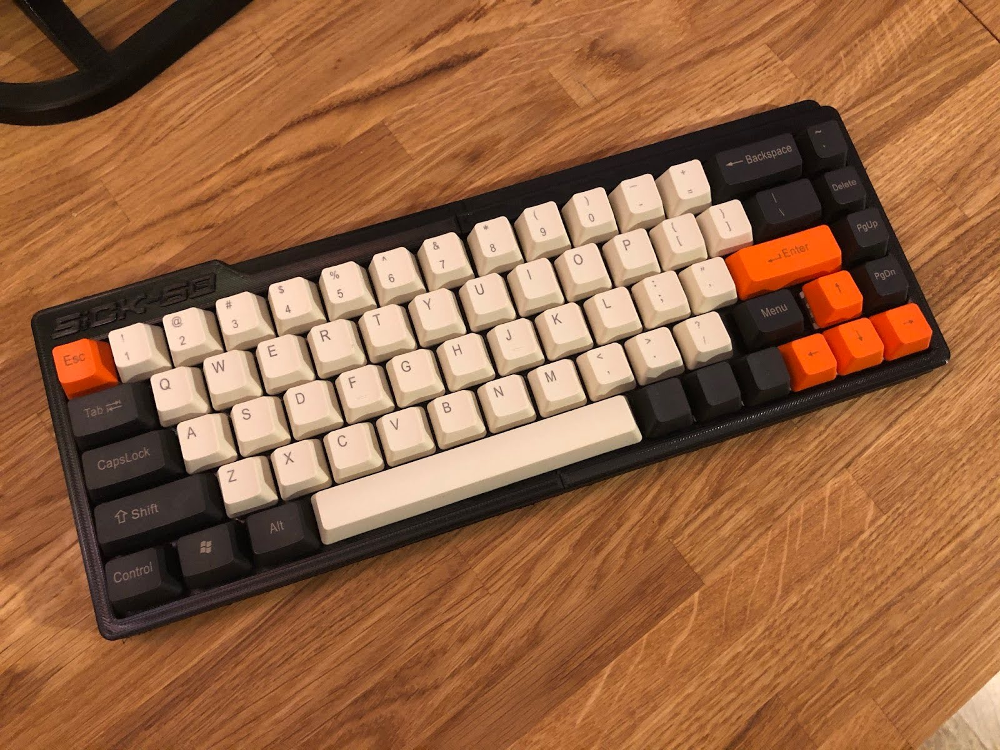

Projects
-
>_Wild Walks Spotter Sheet Generator 2024-01-10
A web app that generates printable nature spotter sheets for winter walks
-
>_
-
>_
-

Building a DIY Mechanical Keyboard 2020-12-163D-printed Sick-68 build with Gateron Browns and a Teensy 2.0